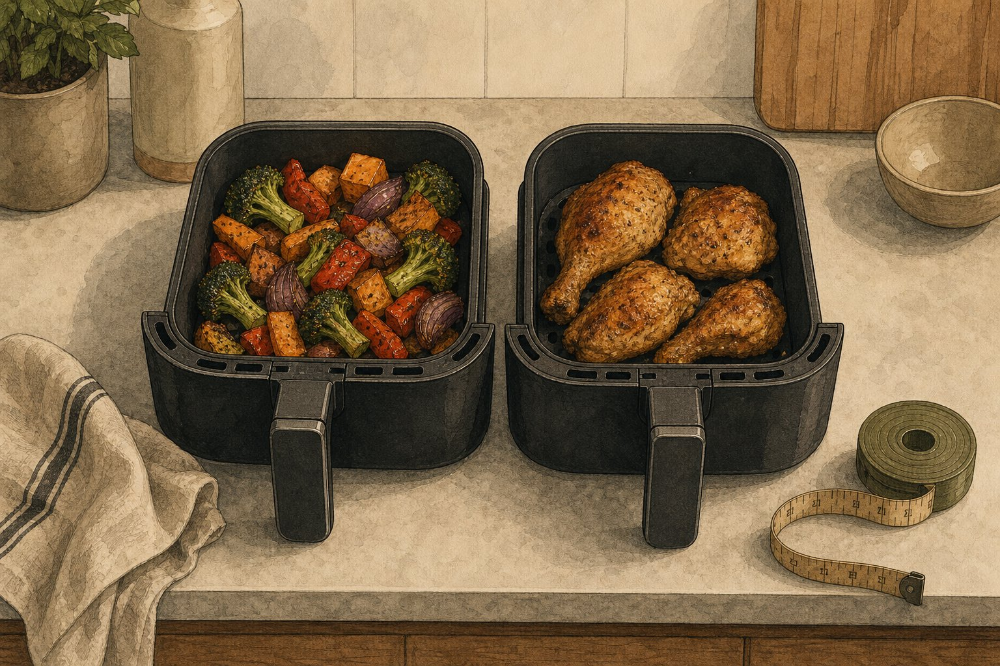

Home › Guides › Is a dual-basket air fryer worth it, or …
Buying guide · November 2026 · about 3 min of reading · checked 2026-11-20
Is a dual-basket air fryer worth it, or are you just buying two baskets?
Every dual-basket fryer is sold with the same sentence: cook a main and a side at the same time. That is a real feature. It is also the only reason the format exists, which makes it a strange product to buy when your week does not contain that problem.
What we would do
Buy two baskets if two parts of one dinner have to be ready in the same minute. Buy the single 8-quart basket if you cook one thing at a time for more than two people. If neither sentence describes your kitchen, the whole format is not your purchase, and the cheaper appliance in this category is the better gift to yourself.
01What the format actually buys you
One box, two independent drawers, two timers. On the Chefman 6-quart in this category the mechanism is stated rather than implied: the listing describes two 3-quart baskets, a Sync Finish function and two viewing windows, with a temperature range of 200–450 °F and 120 volts / 1700 watts in its specification table. The alternative from the same brand is one 8-quart basket with four presets and no window. Same appliance class, opposite philosophy.
02The one question that decides it
Not capacity. Not wattage. The question is whether you routinely finish two components at once. If you cook protein and vegetables as separate runs, two 3-quart drawers turn one dinner into one appliance run. If you cook one pot for a household, two small drawers are a compromise you paid for: 3 quarts will not hold what 8 quarts holds, and you cannot put a full tray of anything in a half-size basket.
03Where two baskets lose
Three things, all visible on the listing before you buy. First, each drawer is half the promise: the dual unit's own Measurements table prints 6 liters for a box marketed as 6 quarts, while the single-basket unit states 8 quarts flat. Second, footprint: 13.38 inches deep and 11.81 inches wide for the dual unit against 12.75 deep and 13.5 wide for the single basket, so you are trading depth for width rather than getting something smaller. Third, weight and handling — 13.3 pounds against 12.8, which matters the first time you lift a hot drawer to the sink.
04“Sync Finish” is a feature name, not a measurement
The dual-basket listing names Sync Finish among its functions. What we cannot tell you, because the listing text does not say and we have not cooked with the unit, is how it behaves when one basket needs four more minutes than the other: whether it holds one basket, shortens the other, or finishes both and lets one rest. If that behaviour is what you are paying for, it is a question for the manual that arrives in the box, not something a review number settles.
05How to decide in five minutes, without us
Write down the last five dinners you actually cooked. Mark the ones where two components needed to be ready together. Two or more out of five: the format is solving a problem you have. Zero or one: you want a bigger single basket, or an oven-style unit that can hold a whole tray — the Emeril in this category is 16.9 inches deep, which is its own warning label.
| Your week looks like | What you are buying | The honest verdict |
|---|---|---|
| Two of you, main + veg, one run | Two small zones, synced timers | The format exists for this exact case |
| A household, one dish at a time | One 8-quart basket | More usable area in a similar box |
| Roast, toast, and something crisp | Oven-style cavity, 26 quarts stated | Different appliance, needs a deeper counter |
| You have not cooked since August | Anything | A preset count will not fix this |

Keep reading
Capacity is the next trap: the no-hype capacity checklist. Whether you can be bothered to clean it is the one after that: cleanup and counter-space trade-offs. The wider fork, drawer or door, is basket or oven-style.
If this guide decided it for you
One line each on why you would pick it, and the caveat that comes with it. Every figure behind these lines is in the specification table on the product page, with its source.
-
Air Fryers · Chefman
Two baskets, two windows, one finish time
Choose it if two dishes have to land at the same time.
The catch: Two small baskets instead of one big one; 450 °F max, and the listing's own capacity field says 6 liters
-
Air Fryers · Chefman
One basket, no windows, four buttons
Choose it if you cook one thing at a time and want the largest single basket.
The catch: No window, single zone, and the listing contradicts itself on top temperature and wattage
-
Air Fryers · Emeril Lagasse
A countertop oven that happens to air-fry
Choose it if one appliance has to roast, toast and air-fry, and the counter is deep enough.
The catch: 16.9 in of depth plus French-door swing, item weight unstated on listing, and the listing contradicts itself on preset count and accessory count
Every specification quoted above is from the official listing, dated 2026-11-20. See the source register for links, and the Flagged for Review page for the contradictions.